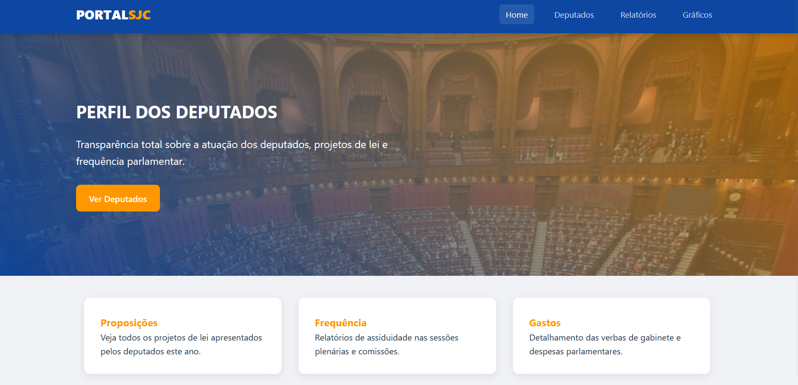

Sobre mim
Sou um jovem profissional com formação pelo SESI, certificação técnica em Desenvolvimento de Sistemas pelo SENAI e atualmente estou cursando Desenvolvimento de Software Multiplataforma pela FATEC, em busca de oportunidades para aplicar e expandir meus conhecimentos na área de tecnologia.
Baixar CurrículoCompetências
Trabalhos

Radar Cidadão
O projeto consiste em uma plataforma de transparência pública que democratiza o acesso a dados parlamentares através de uma interface intuitiva e visual. Ao converter informações brutas da Câmara em gráficos e tabelas, a aplicação simplifica o monitoramento da assiduidade, da produtividade legislativa e da gestão de gastos dos deputados. O objetivo é transformar dados complexos em uma ferramenta de controle social, oferecendo uma visão analítica que facilita o acompanhamento direto da população sobre a atividade legislativa.